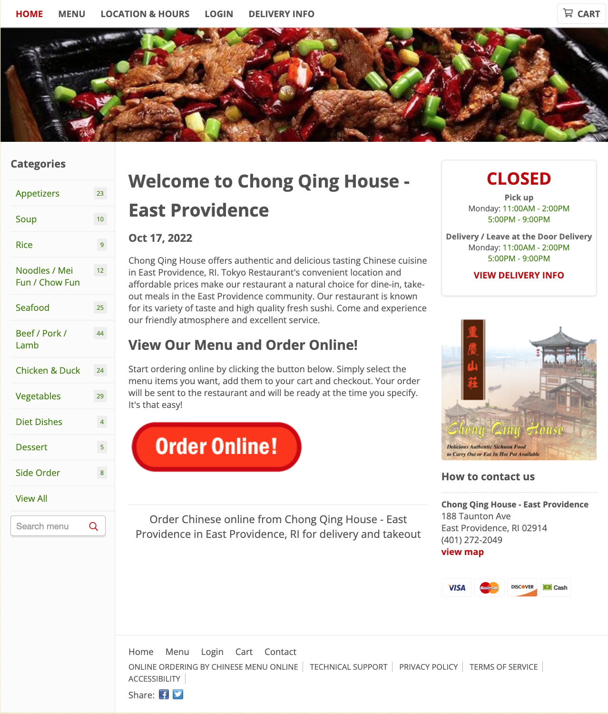
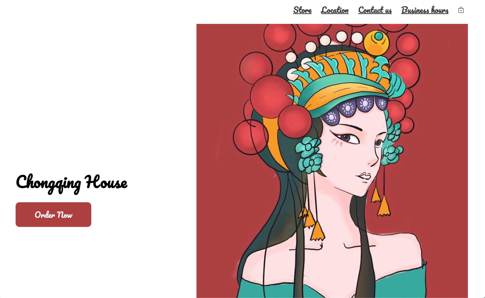
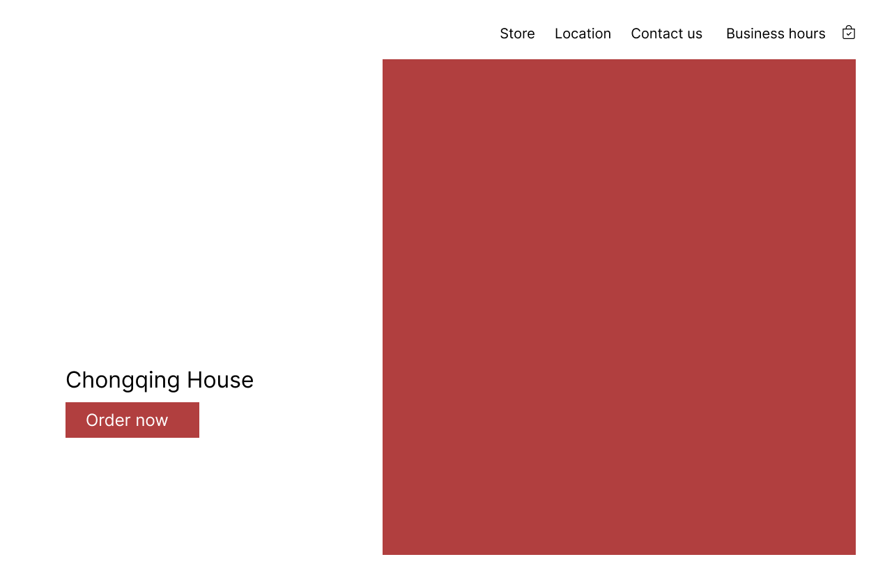
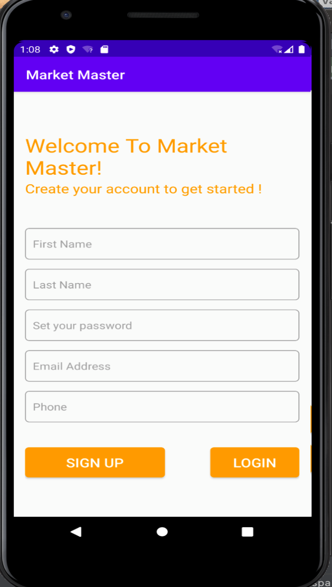

Welcome to My Portfolio
I'm a
Personas & Storyboarding
Abstract
In this project, I selected an accessible interface in public view and recorded observations from the users. I also prepared a list of interview questions for the users regarding their experiences with the interface. Their responses were summarized and I created two personas from the data I collected. Finally, I created a storyboard of 12 frames for one of the personas that I created.
Background
In recent years, the increase in people’s consumption power has coincided with the rise in living standards. In grocery stores, there are frequently long lines at the counter. Therefore, more and more supermarkets have introduced the self-checkout station to improve the efficiency of the checkout process.
Interface selection
I chose to observe the CVS self-checkout station

The interface mainly has 5 parts including a screen to display instructions and scanning lists, a credit card machine to complete payment, a scanning area to scan the goods, a small table for unscanned goods, and another table for weighting and bagging.
Click "Read more" to see details
Read More
Personas
After I completed my observations and summarized the users' responses to my interview questions, I created the following personas.
Click the Persona image to view the next one. It might take some time to load.

Storyboarding
|
|
|
|
|
|
|
|
|
|
|
|
|
|
|
|
Responsive Redesign
Abstract
In this project, I selected a simple restaurant online ordering site to practice the workflow of redesigning a simple website. I first identified the usability problems with the website and then check its accessibility with WebAIM WAVE. Secondly, I utilized both low-fidelity and high-fidelity prototyping to visually redesign the webpage. Finally, I applied HTML and CSS to conduct a responsive redesign of the webpage.
Background
Chongqing House is a popular place in Providence as one of the few local Chinese restaurants. However, my friends and I had to frequently order food online because of its distance from Brown University. Moreover, They do not work with any delivery platforms such as Uber or DoorDash, so we had to order directly from its custom-made ordering website.
Original Website
Visit the original website!Go to https://www.chongqinghouseri.com/
As a restaurant ordering site, I think images are more effective than words in highlighting the deliciousness of the food. I chose the website because I think the design is text-heavy and the layout is outdated.
Redesign Website
Go to https://flyingtiger777.github.io/CS1300_Redesign-Webdev/
Click "Read more" to see details
Read More
Usability Analysis
Consistency
At the center of the webpage, it includes an introduction to the
restaurant with the big
title “Welcome to Chong Qing House”. However, in the detailed description, it mentions a “Tokyo
restaurant” and “high-quality fresh sushi”, which are clearly contradictions that leave the users
wondering if they are viewing the wrong website.
Flexibility and Efficiency of Use
The categories section on the left could
provide flexibility to
experienced users, but it might cause confusion to novice users. The users come to the website to order
food online, so the first thing they are most likely to notice is the huge red order online button.
After clicking the red button, it shows an identical menu to the categories section. Then, it is a bit
weird to have two identical menus showing on screen simultaneously, and if you click the menu at the
center of the screen, it redirects you to the same page associated with the categories section, which
makes the red button and menu section meaningless.
Recognition
If you only look at the interface and don't move the mouse over
the target, it's
difficult to notice that the poster on the right is clickable and takes you to the home page. If you are
currently on the homepage, clicking it will have no effect. Similarly, it is not immediately evident
that the texts in green are clickable in the working hours display.
Error prevention
Although it shows “closed” in
the
working hours' display
section, the whole process
of online ordering is not disabled. It only offers error messages when you proceed to check out, which
doesn’t necessarily eliminate error-prone conditions.
Low-fidelity Wireframing
Scroll to view the full Wireframing.
Click to view wireframings for
different platforms
High-fidelity Wireframing
Design Style Guide

I divided the entire page into different views and skip the repeating menu section.
Click the picture to view the next wireframe
The wireframing annotations are included in the original report.
React Development
Abstract
In this project, I implemented a simple application that allows users to view the products of a bakery shop based on React development. Users can filter the products by their types and sort the products by prices or calories. Additionally, users can add selected products to their favorites and the total price will be displayed.
Interface Overview
Click "Read more" to see details
Read More
Usability Analysis
- Used borders and hover effects to indicate the buttons which users can interact with.
- Implemented an "All" button to revert from filtering.
- Implemented a "Reset" button to reset the sorting settings.
- The users can not add duplicated items to the favorite list. By clicking the items in the favorite
list, users can remove the item in the list.
Organization of Components
The application consists of 5 components including BakeryItem, Card, CardList, Favorites, and filterList. BakeryItem includes a navigation bar for filtering and sorting as well as a display section for the products. Card and CardList components are for displaying the products in a list of cards style. The favorites component is for the favorites list. Finally, filterList is for updating the list after applying filtering conditions.
User Interaction
Users mainly interact with the interface using the buttons. If users click the filtering buttons, the state of types and products will be updated with the filterList component. Similarly, if users click the sorting buttons, the state of types and products will also be updated. I have the "types" parameters to represent different methods, so users can click on different sorting settings and the products will be sorted with different properties such as prices or calories.
If the users click on the "add" or "remove" buttons from the product cards or the favorites list, the state of total and favor will be updated as products are added to or removed from the favorites list. The total price inside the Favorites will be automatically calculated and shown in the favorites list.
Android Development
Abstract
Our team’s project is an application for the high school investment club members to view the stock trends. The project can store various stock market data, providing functions via requests. The application allows users to select and examine historical stock prices upon requests sent from the client-side.
Requirements
The basic requirements for the project are as follows: The application should be able to store real-time stock market data to match real-life circumstances. The application needs to allow the user to examine and search for stocks that are available on stock exchanges. To meet such requirements, the major deliverables of the project are a user interface and an interactive backend data server. The crucial steps toward completing this project include needs assessment, project planning, tools installation and set up UI and backend design, database management, review and customer approval, framework development, frontend implementation, assembly, and testing.
Click "Read more" to see details
Read More
Interface Overview
Click the image to view the next one.
The application creates a stress-free environment for users to gain hands-on experience in stock trading. Users will be able to modify and delete their datasets and focus on the information that interests them. The application is designed specifically for investment club members and novice investors who are seeking practice in stock trading and testifying their strategies.
Contact me for the detailed project report.